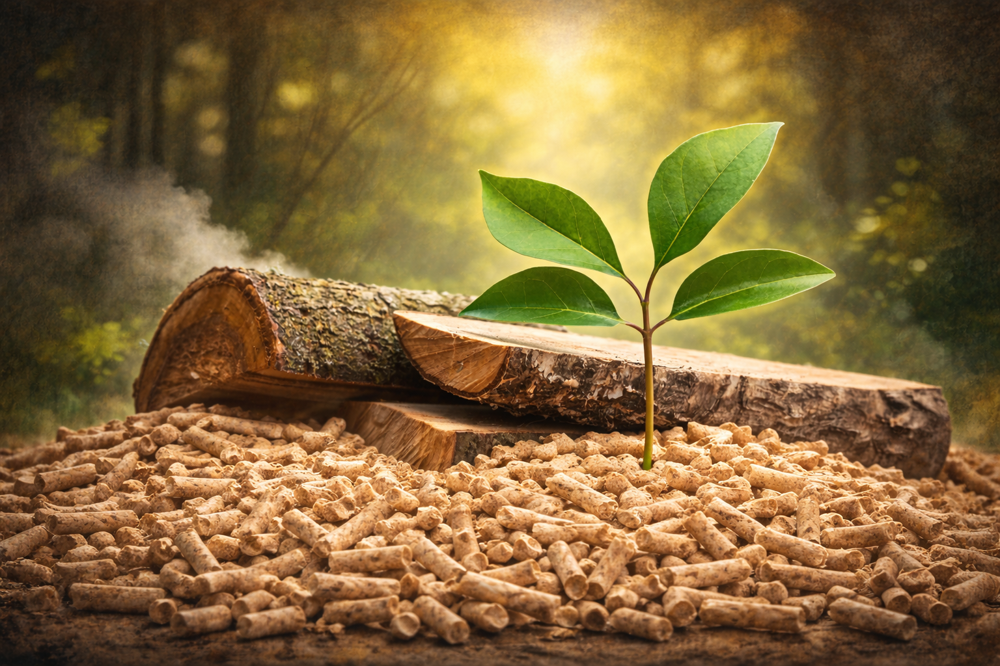

What is Biomass Energy?

Biomass is a renewable energy source that uses organic matter such as plant waste, food scraps, and agricultural byproducts to produce energy. It can be converted into heat, electricity, or fuel through processes like combustion or fermentation.
It is considered sustainable because the materials can regenerate naturally and it helps reduce landfill waste. Although it emits carbon dioxide when used, this impact is partially offset because plants absorb CO₂ during their growth, making it a cleaner alternative to fossil fuels.